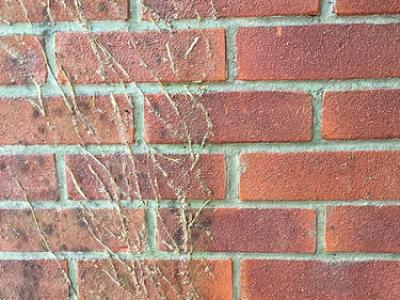
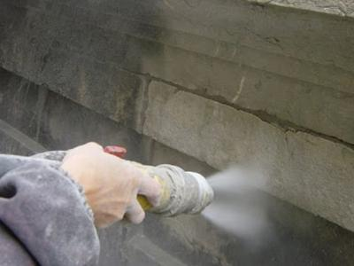
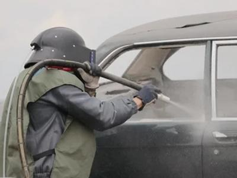
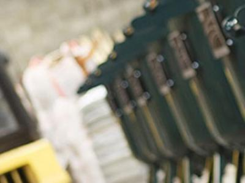

Мобильная пескоструйная обработка!
Санкт-Петербург и Ленинградская область
Санкт-Петербург и Ленинградская область
194214, Санкт-Петербург, ул. Есенина, 19 к.2
info@blast-service.com
Пескоструйная обработка и очистка сруба. Особенности шлифовки дома пескоструем.
Пескоструйная обработка сруба – современный и самый быстрый способ очистки стен деревянного дома.
Пескоструй – оборудование, подающее под заданным давлением струю воздуха или воды с абразивом. Позволяет регулировать глубину обработки и очистки дерева, провести шлифовку, декоративное состаривание дерева.
Пескоструйная обработка используется, когда необходима:
- Очистка сруба и деревянного дома перед покраской
- Обработка дерева методом браширование, состаривание текстуры
- Реставрация внешнего слоя старого сруба
- Очистка дерева от коры
Пескоструй имеет неоспоримое преимущество перед иными методами – это скорость.
Обработка 1 м.кв. занимает около 1 минуты.
В зависимости от результата, который Вы желаете получить, мастер настроит подберет необходимую фракцию абразива, настроит оборудование, выполнит работы с гарантированным результатом.
Кроме скорости, пескоструйная очистка позволяет эффективно провести обработку даже в самых труднодоступных местах и стыках, что невозможно иными методами.


{kind=link}
{kind=link}
{kind=link}
Очистка сруба перед покраской
Тщательная подготовка дерева перед окраской = длительный срок эксплуатации будущего покрытия. Пескоструй позволяет быстро и надежно убрать следы загрязнения, сырости, зелени и плесени.По окончании работ, рекомендуется провести как можно быстрее антисептирование.
| Вид работ | Цена / м.кв. |
|---|---|
| Подготовка сруба под покраску | от 200 руб./м2 |
| Антисептик и покраска в 1 слой | от 140 руб./м2 |
Браширование или «состаривание» стен сруба деревянного дома
Пескоструйная обработка позволяет обработать бревна или брус под стиль «старины». Оборудование снимает верхний слой древесины и раскрывает фактуру дерева.Браширование или шлифовка пескоструйным оборудованием – подготовительный этап перед покраской, требующий дополнительной мелкой шлифовки.
В результате шлифовки сруба пескоструем, снимаются верхние мягкие слои древесины на заданную глубину.
В зависимости от дальнейшей обработки стен, покраски или покрытия маслом, потребуются финишные работы по мелкой шлифовке.
На отполированную поверхность краска не ляжет, тогда как пропитка маслом требует наиболее гладкую поверхность.
| Вид работ | Цена / м.кв. |
|---|---|
| Браширование древесины | от 300 руб./м2 |
| Антисептик и покраска в 1 слой | от 140 руб./м2 |
Преимущества шлифовки сруба пескоструем
- За 1 смену мы сможем провести работы по шлифовке сруба на 200 м.кв. неокрашенной древесины или 100 м.кв. окрашенной. В сравнении с традиционными ручными методами, то, что обычно делают мастера недели, с помощью пескоструя можно обработать за 1-3 дня.
- Идеальная поверхность под окраску. Направленная струя с абразивом точечно раскрывает поры дерева, что улучшает проникновение краски. Пропитывающие составы впитываются максимально глубоко!
- Шлифовка сруба в самых труднодоступных местах возможна только с пескоструйным оборудованием! Ни один другой метод не позволяет проникнуть абразиву в узкие щели, стыки и углы настолько эффективно.
- Точечная обработка участков на срубах и деревянных домах, где уже проведены работы по герметизации и теплому шву, тоже доступна. Мастер аккуратно пройдет сложные участки с помощью тонкой регулировки оборудования.
Недостатки абразивно-струйной шлифовки
Несколько недостатков в работе с абразивно-струйной обработкой тоже есть. При общении с клиентом, мы всегда подробно рассказываем плюсы и минусы, чтобы оправдать ожидания после окончания работ.- Одно из главных условий высокого качества работ – опыт мастера. Настройка оборудования всегда зависит от многих факторов, в т.ч. какая поверхность подвергнется обработке: металл, кирпич или дерево. Знание всех нюансов настройки оборудования, опыт работ с породами дерева и различными материалами, а также пропорции абразива и воздуха, фракция песка, размер сопла и т.п., очень важны чтобы получить качественный результат, а не разорванные волокна.
- Пескоструйная обработка экономически более целесообразна, если объем работ более 100 м.кв. При меньшем объеме, выгоднее заказать шлифовку сруба болгаркой или иными методами.
- Различные серьезные повреждения дерева, такие как задиры, шегрень, щепу требуется убрать до обработки. Пескоструй может сгладить только небольшие дефекты.
Пескоструйная обработка сруба деревянного дома от 140 руб./м.кв.
ЦЕНЫ НА УСЛУГИ
Отправьте фото - узнайте точную цену на услуги
Очистим любую поверхность! Выезд бригады уже сегодня!
-
 БЕЗВОЗДУШНАЯ ПОКРАСКА ФАСАДОВ И КОНСТРУКЦИЙВ 5 раз быстрее! Равномерное прокрашивание без разводов.от от 90 руб.
БЕЗВОЗДУШНАЯ ПОКРАСКА ФАСАДОВ И КОНСТРУКЦИЙВ 5 раз быстрее! Равномерное прокрашивание без разводов.от от 90 руб. -

-
ОБРАБОТКА КИРПИЧА И КИРПИЧНОЙ КЛАДКИФасады, помещения, ограждения, мостыот 150 руб. за м.кв.
-
ОЧИСТКА БЕТОННЫХ КОНСТРУКЦИЙПлиты, ж/б сооружения, ограждения, мостыот 150 руб. за м.кв.
-
 ОБРАБОТКА ДЕРЕВЯННЫХ СТРОЕНИЙЖилые/нежилые сооружения, деревянные конструкцииот 140 руб. за м.кв.
ОБРАБОТКА ДЕРЕВЯННЫХ СТРОЕНИЙЖилые/нежилые сооружения, деревянные конструкцииот 140 руб. за м.кв. -
 ГРАНИТНЫЕ И МРАМОРНЫЕ ИЗДЕЛИЯАрхитектурные объекты, набережные, памятники, колонны, столбыот 180 руб.
ГРАНИТНЫЕ И МРАМОРНЫЕ ИЗДЕЛИЯАрхитектурные объекты, набережные, памятники, колонны, столбыот 180 руб. -

-

-

-
 ПЕСКОСТРУЙНАЯ ОЧИСТКА ВЕЛО-МОТО ТРАНСПОРТАлюбой вид велосипедов, мотоциклов, мопедовот 2500 руб.
ПЕСКОСТРУЙНАЯ ОЧИСТКА ВЕЛО-МОТО ТРАНСПОРТАлюбой вид велосипедов, мотоциклов, мопедовот 2500 руб. -
 ОЧИСТКА СПЕЦТЕХНИКИЛюбая специальная и дорожная техника: трактора, манипуляторы, краны и др..от 20000 руб.
ОЧИСТКА СПЕЦТЕХНИКИЛюбая специальная и дорожная техника: трактора, манипуляторы, краны и др..от 20000 руб. -
ВЫЕЗД БРИГАДЫ НА 1 РАБОЧИЙ ДЕНЬСмена 1+7 часов в пределах СПб, включен песок 1,5 тн + ГСМ25000 руб.
-
 ВОДНЫЙ ТРАНСПОРТЛюбой вид водного транспорта (лодки, яхты, корабли, катамараны)от 15000 руб.
ВОДНЫЙ ТРАНСПОРТЛюбой вид водного транспорта (лодки, яхты, корабли, катамараны)от 15000 руб. -

-
 АРЕНДА КОМПРЕССОРА И ПЕСКОСТРУЙНОГО ОБОРУДОВАНИЯСмена 1+7 часов с оператором в пределах СПб10000 руб.
АРЕНДА КОМПРЕССОРА И ПЕСКОСТРУЙНОГО ОБОРУДОВАНИЯСмена 1+7 часов с оператором в пределах СПб10000 руб.
194214, Санкт-Петербург, ул. Есенина, 19 к.2
info@blast-service.com

Политика конфиденциальности